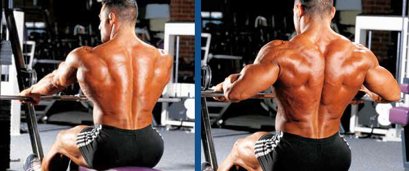

10 najboljih vježbi za leđa
Mišići leđa čine drugu najveću skupinu mišića nakon mišića nogu. Stoga ako im poklonite pažnju kakvu doista zaslužuju, vratit će vam na najbolji mogući način. Bez obzira da li je vaš cilj spržiti veliki broj kalorija, izgradit impresivnu masu, poboljšati funkcionalnu snagu, popravit držanje ili samo ukloniti bolove koje uzrokuje sjedilački način života, s pravilnom vježbom ne možete nikako pogriješiti.Jeste li ikad razmišljali o tome koje su zapravo najbolje vježbe kojima ćete u rekordnom roku izgraditi savršena leđa? U nastavku donosimo pregled dokazano najučinkovitijih vježbi koje će ojačati, proširiti i popuniti vaša leđa tako da će vam mnogi kolege zavidjeti. 
1. Mrtvo dizanje
Mrtvo dizanje ili deadlift ne samo da je osnovna i najbolja vježba za leđa, već je i jedna je od najboljih vježbi za snagu i eksplozivnost, a aktivira gotovo sve veće mišićne skupine. No radi se o iznimno zahtjevnoj vježbi koja predstavlja velik stres kako na mišiće tako i na centralni živčani sustav, stoga prilikom izvođenja treba biti oprezan i paziti na pravilnu tehniku izvođenja.Tehnika:
Stanite tako da vam stopala budu razmaknuta otprilike u širini ramena i okrenuta blago prema van. Primite šipku nathvatom u širini ramena, držeći leđa što je moguće uspravnije. Savijte koljena dok vam natkoljenice ne dođu u položaj paralelan s podom. Pogled je usmjeren ravno prema naprijed tijekom čitavog pokreta. Iz tog položaja dižite se prema gore ravnajući noge i podižući kukove sve dok vam tijelo ne bude potpuno uspravljeno. U toku dizanja šipku držite uz tijelo. Kada vam je tijelo uspravljeno šipka je naslonjena na bedra. Gledajući ispred sebe, spuštajte uteg savijajući koljena i kukove sve dok uteg ne dotakne pod. Kontrola pokreta je stalna kroz čitav pokret, a šipku držite uz noge što je više moguće.
| Ponedjeljak | Utorak | Srijeda | Četvrtak | Petak | Subota | Nedjelja |
|---|---|---|---|---|---|---|
| Zgibovi | Matman | Veslanje | Slijeganje ramenima | Hiperekstenzija | Okomito veslanje | ODMOR |
| 5x12 | 4x8 | 3x10 | 4x10 | 3x12 | 4x10 |